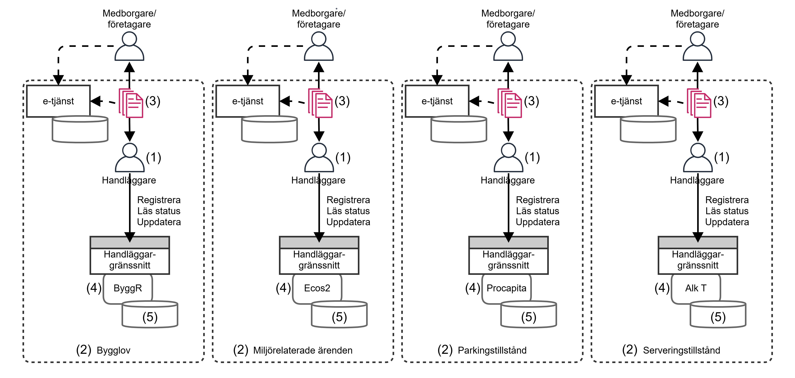
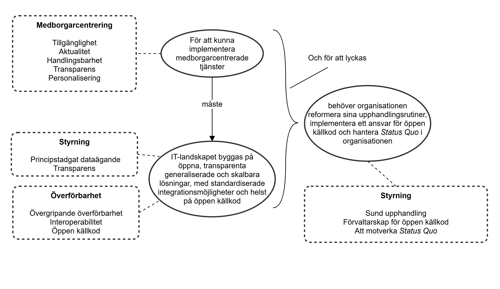

Inledning
När jag började forska om varför det är så svårt att utveckla medborgarnära digitala tjänster i kommunen trodde jag, som många andra, att svaret till största del skulle handla om tekniken. Föråldrade system, krångliga integrationer, leverantörsberoenden, allt det vi brukar kalla teknisk skuld. Efter fem delstudier inkluderat 25 intervjuer, adderat 25 ytterligare expertintervjuer, tillsammans med mina sex års arbete i Sundsvalls kommun, har jag landat i en annan slutsats, att den skulden till största delen är social. Den uppstår och underhålls av hur vi styr, upphandlar, organiserar oss och förhåller oss till förändring, inte av kod.
Det är ingen liten omformulering. Det betyder att problemet inte ägs av IT-avdelningen. Det ägs av alla som fattar beslut om hur kommunen möter sina invånare och företagare.
Den här texten handlar om hur vi vänder vårt digitala arv från en börda till en möjliggörare. Med "digitalt arv" menar jag inte bara de gamla systemen – jag menar hela den ackumulerade väv av tekniska lösningar, avtal, processer, kompetenser och vanor som vi har byggt upp under decennier.
Det totala arvet kommer vi aldrig att kunna riva och från en dag till en annan bygga om helt och hållet från grunden. Men vi kan förvalta det, och stegvis förbättra det (om förutsättningar för det finns, vilket dock sällan är fallet) eller stegvis ersätta det med moderna lösningar. Detta på ett sätt som gradvis gör det möjligt att leverera de tjänster invånare och företagare faktiskt behöver, tjänster som är tillgängliga, snabba, tydliga, transparenta och anpassade efter deras situation snarare än efter våra interna ärendegångar.
För att göra det krävs att vi designar med avsikt, och inte bara den enskilda tjänsten, utan hela det ekosystem som tjänsten lever i. I min avhandling (Persson, 2025) har jag destillerat 14 design-principer grupperade i tre familjer som tillsammans pekar ut den riktning vi behöver gå för att hantera de identifierade nio utmaningar som bromsar kommunernas digitala transformation:
- Medborgarcentrering – tjänsterna ska utgå från invånarens och företagarens processer, inte från handläggarens ärendeprocess.
- Överförbarhet – det vi bygger på ett ställe ska gå att återanvända på ett annat, inom kommunen och mellan kommuner.
- Styrning – vi behöver behålla kontrollen över våra data, våra algoritmer och våra beslutsprocesser, och göra dem öppna och granskningsbara.
Principerna är inte abstrakta ideal. De är konkreta motdrag mot de mönster som idag bygger ny skuld snabbare än vi hinner betala av den gamla. Nedan går jag igenom dem en och en, med exempel från det arbete vi gjort i Sundsvall och från de andra fall som ingått i min forskning. Min förhoppning är att texten ska vara användbar för dig som arbetar med digitalisering i offentlig sektor – som chef, arkitekt, utvecklare, upphandlare eller verksamhetsutvecklare – och som vill ha något mer hanterbart än "vi måste byta allt" och något mer kraftfullt än "vi får leva med det vi har".
Skulden ni redan känner igen
Innan vi går in på principerna behöver vi vara konkreta om vad det egentligen är vi försöker hantera. Ni känner förmodligen igen mönstret nedan även om ni aldrig paketerat det som teknisk skuld.
En invånare ska söka ett tillstånd och loggar in på en e-tjänst, fyller där i ett formulär som speglar hur handläggaren tänker snarare än hur invånaren tänker, och får sedan vänta i veckor utan tydlig information om vad som händer. Parallellt arbetar handläggaren i ett system som inte pratar med det system där ärendet registreras, som i sin tur inte pratar med fakturasystemet och så vidare. Varje gång någon vill förändra något – lägga till ett fält, integrera en ny tjänst, byta leverantör – visar det sig att förändringen kostar tio gånger mer än man trodde, eller är "tekniskt omöjlig" eftersom den leverantör som byggde systemet 1997 är den enda som förstår hur det hänger ihop.

Det här är teknisk skuld i praktiken. Och om du tittar närmare ser du att den sällan beror på att någon har skrivit dålig kod. Den beror på beslut som fattades långt från systemens kodbaser, beslut som:
- att vi upphandlade ett system per förvaltning i stället för en gemensam plattform
- att vi accepterade slutna, eller helt avsaknad av, API:er samt proprietära dataformat, eftersom det stod så i offerten
- att vi byggde processer kring ärendet i stället för kring invånarens hela situation
- att vi lät "så här har vi alltid gjort" vinna över "så här borde vi göra"
I min forskning kallar jag det här för socio-teknisk skuld. Begreppet kan kännas klumpigt men poängen är desto viktigare. Skulden lever i mellanrummet mellan tekniken och organisationen. Den underhålls av styrningsmodeller, upphandlingsregler, kulturella vanor och leverantörsrelationer, och den uttrycker sig som tekniska låsningar som blir allt dyrare att frigöra sig från. Det är därför rena IT-projekt så ofta misslyckas med att leverera medborgarnytta – de byter kanske motorn men låter resten av bilen vara som den alltid har varit.
Den viktigaste praktiska konsekvensen av det här är att design-principerna i resten av texten inte är tekniska checklistor för IT-avdelningen. De är i stället beslutsstöd för alla som påverkar hur kommunen möter sina invånare, från digitaliseringschefen och upphandlaren till verksamhetschefen och den enskilda förvaltaren som väljer hur en process ska se ut. Om de bara läses som teknik kommer de inte att fungera. Om de läses som en gemensam riktning för hur vi bestämmer, köper, bygger och förvaltar, då kan de börja vända arvet från börda till möjliggörare.
Medborgarcentrering: tjänster som börjar i invånarens verklighet
Den första familjen av principer handlar om något som låter självklart men som visar sig vara svårt i praktiken, att tjänsten ska utgå från invånaren och företagaren, inte från handläggningen.
I de kommunala system jag har studerat ser man gång på gång samma mönster. När en e-tjänst utvecklas formuleras kraven av handläggarna. Det är fullt logiskt då det är de som kan ärendet, känner regelverket och vet vilka uppgifter som behövs. Men resultatet blir en digital spegelbild av en intern blankett. Invånaren får anpassa sig till kommunens organisation snarare än tvärtom och får logga in i flera olika tjänster för olika delar av samma livshändelse, fylla i samma uppgifter flera gånger, och vänta utan att veta var i processen ärendet befinner sig (Persson et al., 2024).
De fem medborgarcentrerade principerna är riktade mot just det här. De är inte fem separata saker att bocka av; de är fem vinklar på samma grundfråga: hur skulle den här tjänsten se ut om vi designade den utifrån invånarens hela situation i stället för utifrån vår interna ärendegång?
Tillgänglighet
Den första principen handlar om att relevant information och relevanta tjänster ska gå att nå när invånaren behöver dem, och inte fördelade på sju olika portaler, ett kontaktcenter och en pappersblankett som ska postas in. Tekniskt sett kräver det öppna API:er och realtidssynkronisering mellan system. Organisatoriskt kräver det att förvaltningarna släpper idén om att de äger "sin" data. Tillgänglighet är där medborgarcentreringen möter den sociala skulden mest direkt – så länge förvaltningsgränserna är heliga kommer invånaren att möta och begränsas av dessa.
Aktualitet
Den andra principen handlar om att invånaren ska få veta vad som händer, när det händer. Inte "vi återkommer inom åtta veckor", utan få löpande och automatiserad återkoppling om var ärendet befinner sig och vad nästa steg är. Det här är en av de principer som ger störst upplevd förbättring för relativt liten teknisk investering, men det förutsätter att ärendehanteringssystemen kan tala om för en utåtriktad tjänst vad som händer. Många system kan inte det idag.
Handlingsbarhet
Den tredje principen handlar om att invånaren ska kunna agera rätt, första gången. En komplett ansökan i stället för en halv. Ett anmälningsärende klassificerat på rätt sätt i stället för fel. Det handlar om att bygga in vägledning, kontextkänsliga hjälptexter och stegvisa flöden i tjänsten så att kommunens regelverk översätts till handling i stället för att lämnas över som ett pdf-dokument på 14 sidor. Varje ofullständigt ärende leder till extraarbete för både invånaren och handläggaren.
Transparens
Den fjärde principen handlar om att invånaren ska kunna förstå hur beslut fattas. Det är en juridisk fråga – rätten till insyn i myndighetsutövning är grundläggande – men den är också en designfråga. Vilka regler tillämpades? Vilka uppgifter låg till grund? Och i takt med att vi börjar använda AI i handläggningen, vilken algoritm användes, och hur? Transparens är inte ett påklistrat lager utan något som måste byggas in från start, i hur vi loggar, dokumenterar och exponerar beslutsunderlaget.
Personalisering
Den femte principen handlar om att tjänsten ska anpassa sig efter vem som använder den. En privatperson som söker bygglov för första gången behöver något annat än en byggherre som lämnar in sin tjugonde ansökan i år. Personalisering betyder inte att vi samlar in mer data om invånaren. Det betyder i stället att vi använder den information vi redan har, och som invånaren redan gett oss, för att slippa fråga om samma sak igen. Det är en princip som är lätt att säga ja till och svår att leva upp till, eftersom den kräver att data flödar mellan system på sätt som en "standard-arkitektur" inom kommunsektorn inte tillåter.
Sammanfattningsvis pekar de fem medborgarcentrerade principerna mot en gemensam förskjutning. Bort från ärendet som organiserande enhet och till invånarens situation som organiserande enhet. Det är en filosofisk förändring mer än en teknisk. Men, och det är poängen med resten av texten, den filosofiska förändringen kan inte realiseras utan att vi också ändrar hur vi bygger och hur vi styr. Det är därför nästa familj av principer handlar om överförbarhet.
Överförbarhet: bygg så att det går att återanvända
Den andra familjen handlar om hur vi bygger. Eller mer precist, hur vi bygger så att det vi gör idag inte blir morgondagens skuld.
Om medborgarcentrering svarar på frågan vad ska vi leverera, så svarar överförbarhet på frågan hur ska vi leverera det utan att låsa in oss för nästa generation. Det är en princip som ofta hamnar i skymundan eftersom den inte ger någon synlig medborgarnytta i sig själv. Ingen invånare märker om en lösning är modulär eller monolitisk, om API:erna är öppna eller stängda, om koden är fri eller proprietär. Men på fem års sikt avgör det här om kommunen kan utveckla nya tjänster överhuvudtaget eller om varje nytt initiativ kommer att fastna i kostnadskalkyl-steget för att integrationerna är för dyra och leverantörsberoendet för djupt.
Det är värt att vara konkret om vad leverantörsinlåsning faktiskt kostar. I de fall jag har studerat är det inte ovanligt att integrationen av ett befintligt system med en ny tjänst kostar mer än utvecklingen av den nya tjänsten själv. Inte för att integrationen är tekniskt komplicerad i sig, utan för att den enda som vet hur den befintliga lösningen fungerar är den leverantör som byggde den, och som därför kan sätta priset själv. Det är skuld i sin renaste form – ett tidigare beslut som idag tar ut sin ränta varje gång vi vill utvecklas.
Övergripande överförbarhet
Den första principen är paraplyet för hela familjen och säger något enkelt: bygg modulärt, bygg på standarder, bygg så att lösningen kan flytta från en kontext till en annan. Det betyder generaliserade datamodeller i stället för specialanpassade. Det betyder API:er på en hög abstraktionsnivå i stället för specialiserade integrationspunkter. Det betyder också att vi när vi utvecklar en lösning för bygglov ska fråga oss om den även kan användas för miljötillstånd, serveringstillstånd eller andra tillståndsprocesser. Inte för att alla tillståndsprocesser är identiska, utan för att de är tillräckligt lika för att en gemensam grund ska kunna bära dem.
Interoperabilitet
Den andra principen skärper kravet och blir konkret. All funktionalitet i den digitala infrastrukturen ska kunna anropas och all data ska kunna hanteras genom standardiserade, OpenAPI-kompatibla gränssnitt. Det här är en upphandlingsfråga lika mycket som en arkitekturfråga. Om vi inte ställer kravet på öppna och dokumenterade API:er när vi köper in en lösning så får vi det inte heller. Och det är just här en stor del av den socio-tekniska skulden byggs, i de upphandlingsunderlag som accepterar att leverantören "har ett API" utan att kräva att det är komplett, följer en standard och är fullt dokumenterat.
Öppen källkod
Den tredje principen tar steget längre. När vi som offentlig sektor finansierar utveckling av programvara med skattemedel, så bör den utvecklingen så långt det är möjligt vara öppen och tillgänglig för andra kommuner att bygga vidare på (läs mer på publiccode.eu). Det är en princip som handlar om både ekonomi och kontroll. Ekonomi eftersom 290 kommuner som var och en betalar en leverantör för i grunden samma sak är ett systemfel (Koponen, 2020). Kontroll eftersom så länge koden är någon annans kan vi inte garantera transparens, anpassningsbarhet eller långsiktig förvaltning. I min forskning har jag också sett att öppen källkod inte är en mirakellösning – den kan utvecklas till nya former av leverantörsinlåsning om en enda leverantör i praktiken kontrollerar projektet, om dokumentationen är obefintlig eller om kodberoendena är ohanterbara (Persson & Linåker, 2025), och det behöver vi verkligen vara uppmärksam på.
Det tekniska finstilta
För öppna källkodsprojekt finns dessutom fem mer specifika tekniska principer som det är värt att känna till om man ska driva eller delta i sådana projekt; ändamålsenlig beroendehantering så att inga dolda låsningar smyger sig in, en standardiserad utvecklingsmiljö så att nya bidragsgivare kan komma i gång, fullständig dokumentation om både arkitektur och bidragsprocess, automatiserad testning med hög täckning, samt automatiserad kodkvalitetsanalys vars resultat är öppna. Var och en av dessa principer är riktad mot ett konkret problem, och när någon eller något av detta saknas blir det i praktiken ogörligt för andra leverantörer eller utvecklare att ta vid, och då har vi byggt om inlåsning i en ny förpackning.
Vad de här principerna sammantaget gör är att de bryter en av de starkaste mekanismerna bakom socio-teknisk skuld. Mekanismen att varje kommun, varje förvaltning och varje projekt bygger sin egen lösning på sin egen plattform med sin egen leverantör. När det vi bygger är överförbart, från avdelning till avdelning, från kommun till kommun, och från leverantör till leverantör, då börjar arvet uppföra sig som en gemensam tillgång i stället för en isolerad skuld. Och då blir det också möjligt att styra förändring på det sätt som nästa principfamilj handlar om.
Styrning: behåll kontrollen över det som är ditt
Den tredje familjen handlar om vem som bestämmer. Och om vad vi behåller kontroll över när vi släpper i väg utvecklingsuppdrag, upphandlingskontrakt och driftsansvar till andra.
Det är här det mesta av den socio-tekniska skulden faktiskt skapas. När jag följde de fall som ingår i avhandlingen visade det sig gång på gång att de svåraste låsningarna inte hade tekniska rötter. De hade rötter i beslut som ingen längre kom ihåg vem som fattat. En avtalsformulering från 2014 som gav leverantören ensamrätt att läsa ut data ur systemet. Ett upphandlingskriterium som krävde tio års branscherfarenhet och som i praktiken stängde ute alla utom de tre största aktörerna. En algoritm som klassificerade ärenden men vars logik ingen utanför leverantörens utvecklingsteam kände till. En "så har vi alltid gjort"-kultur som gjorde att även när nya och bättre alternativ fanns, så valdes de bort.
Det här är inte tekniska problem. Det är styrningsproblem. Och styrningsprinciperna är ett försök att ge praktiker konkreta verktyg för att inte bygga den här typen av låsningar nästa gång, och för att stegvis frigöra sig från de som redan finns.
Principstadgat dataägande
Den första principen är den mest grundläggande, att kommunen ska behålla full tillgång till och fullt ägarskap över sin egen data. Det låter självklart men är det inte. I praktiken är data ofta inlåst i leverantörers proprietära format, lagrad på sätt som gör export besvärlig eller omöjlig, eller underkastad avtalsklausuler som ger leverantören veto över hur data får användas. Principen kräver att vi i avtalen är explicita om vad som gäller, att vi tekniskt säkerställer portabilitet, och att vi inte accepterar lösningar där våra egna verksamhetsdata blir en del av någon annans affärsmodell. Det är en principiell fråga mer än en praktisk – offentlig sektors data ska tillhöra det offentliga.
Transparens
Den andra principen säger att kommunens algoritmer, regler och processer ska vara öppna och granskningsbara. Det är delvis ett gammalt krav i ny form – offentlighetsprincipen har gällt så länge svensk förvaltning har funnits – men det får ny laddning när alltmer av handläggningen automatiseras. När en algoritm klassificerar, prioriterar eller fattar beslut, så blir frågan hur det går till en demokratisk fråga. Vi kan inte hänvisa till att "leverantören har det som affärshemlighet". Principen säger att vi behöver kunna visa fram beslutsunderlaget, redogöra för logiken, och göra det möjligt för utomstående att granska. Det stänger ute en hel del leverantörer. Det är meningen.
Sund upphandling
Den tredje principen riktar sig direkt till den process som annars är den största enskilda källan till ny skuld, upphandlingen. Det handlar om att skriva kvalifikationskriterier som öppnar marknaden i stället för att stänga den, att kräva öppna standarder och dokumenterade API:er, att skapa formella kommunikationskanaler under upphandlingens gång så att även mindre leverantörer kan delta, och att dokumentera diskussioner och beslut öppet. Det handlar också om att inte automatiskt förlänga avtal som rimligen borde konkurrensutsättas. Upphandling är inte en administrativ teknikalitet, det är ett av kommunens viktigaste verktyg för att forma den marknad vi själva sedan ska köpa från. Om vi upphandlar som om oligopolet är en naturlag, så kommer det fortsätta vara det.
Förvaltarskap för öppen källkod
Den fjärde principen tar fasta på något jag stötte på flera gånger i forskningen, att öppen källkod inte fungerar av sig själv. Bara för att koden är fri betyder det inte att projektet är välskött, att kvaliteten upprätthålls eller att en bredare gemenskap kan bidra. Principen säger att offentligt finansierade öppen källkodsprojekt behöver en oberoende förvaltningsorganisation, tydliga styrningsroller och leverantörsneutrala granskningsregler. Utan detta riskerar projektet att i praktiken kontrolleras av en enda leverantör, och då har vi byggt om inlåsning till en öppen förpackning. Det är en princip som kräver att flera kommuner samarbetar eller att en nationell aktör tar ansvaret. Den enskilda kommunen är för liten för att över tid bära ett öppet källkodsprojekt av betydelse på egen hand.
Att motverka Status Quo
Den femte och sista styrningsprincipen är på många sätt den jobbigaste, eftersom den handlar om kulturen. Den säger att kommunens ledning och digitaliseringsfunktion aktivt behöver motverka den riskaversion, den bekvämlighet och den uppgivenhet som annars är de starkaste krafterna för att behålla Status Quo. Detta kan göras genom utbildning, genom utrymme att experimentera, genom incitament som premierar förändring och genom att tydligt prata om att det är farligare att stå still än att röra sig. Det är den principen jag själv har funnit svårast att leva upp till i praktiken. Tekniken finns. Oftast finns pengarna. Det som saknas är modet i verksamheten att utmana det bestående och tålamodet i digitaliseringsavdelningen att stå kvar när motståndet kommer.
Tillsammans formar de fem styrningsprinciperna en strategisk grund för allt annat. Du kan ha världens bästa medborgarcentrerade design och världens mest överförbara arkitektur, men om styrningen är otydlig och kulturen riskovillig så kommer skulden att fortsätta byggas. Det är därför styrning inte är en sidofråga utan kärnan. Och det är därför den här texten handlar om design-principer i bred mening – inte bara om hur vi designar tjänster och system, utan om hur vi designar hela det sätt som kommunen organiserar sin digitalisering på.
Att vända arvet: var kan du börja redan imorgon?
Om jag skulle sammanfatta hela den här texten i en mening så skulle den lyda: medborgarcentreringen säger vad vi ska leverera, överförbarheten säger hur vi ska bygga, styrningen säger hur vi ska bestämma, och ingen av de tre fungerar utan de andra två.

Det är poängen med att tala om design-principer i tre familjer i stället för fjorton enskilda regler. Familjerna förstärker varandra. En vacker webbaserad tjänst som är medborgarcentrerad i sitt gränssnitt men byggd på en monolitisk plattform med stängda API:er är en framtida skuld i fin förpackning, en sminkad gris som man brukar säga. En öppen och modulär arkitektur som inte ägs av kommunen utan av leverantören är teknisk frihet utan praktisk frihet. Och starka styrningsprinciper utan tekniska lösningar att luta sig mot blir tomma policyer på pappret. Det är när de tre familjerna arbetar tillsammans som arvet börjar förvandlas från börda till möjliggörare.
Det betyder också att det inte finns något enskilt projekt som löser problemet. Skulden har byggts upp under decennier, från tusentals små beslut, och kommer att behöva betas av på samma sätt, alltså långsamt, genom medvetna val varje gång ett nytt beslut ska fattas. Det är inte heller digitaliserings- eller IT-avdelningens uppdrag att göra det ensam. Det krävs att digitaliseringschefen, upphandlingschefen, verksamhetscheferna och den politiska ledningen drar åt samma håll. Inte i form av en ny styrgrupp eller ett nytt strategidokument, utan i form av en gemensam förståelse för vad varje beslut faktiskt bygger eller löser upp.
Så vad kan du göra redan imorgon? Jag skulle peka ut tre saker.
1. Granska nästa upphandling
Börja med att titta på nästa upphandling som ligger på ditt bord. Vilken som helst. Ställ tre frågor om den:
- Kräver vi att leverantörens lösning exponerar all funktionalitet och all data genom dokumenterade, standardiserade API:er?
- Säkerställer avtalet att vi behåller fullt ägarskap över vår egna data, i ett format som tillåter åtkomst, export och migration?
- Är kvalifikationskriterierna formulerade så att även mindre och nyare leverantörer (inte bara de tre stora gamla drakarna) kan delta?
Om svaret på någon av frågorna är nej, ändra det innan upphandlingen går ut. Upphandlingen är, för den absoluta merparten av alla svenska kommuner, den enskilda punkt där ny skuld byggs eller undviks, och den är också den punkt där förändringen är billigast att göra.
2. Se en process från invånarens sida
Identifiera en process som idag är ärendecentrerad och börja se den från invånarens sida. Ta en specifik tjänst – bygglov, anmälan av missförhållande, eller en livshändelse där flera förvaltningar är inblandade – och rita upp hela invånarens resa, från första kontakt till avslutat ärende. Var blir invånaren ombedd att fylla i samma uppgifter två gånger? Var saknas återkoppling? Var måste invånaren själv hålla reda på vilken förvaltning denne ska prata med? Var lämnas invånaren ensam med ett regelverk som inte går att förstå? Det hanterar inte all förändring som måste göras, men det är där du ser exakt var de fem medborgarcentrerade principerna behöver översättas till konkret lösningsdesign.
3. Ställ frågan om data och algoritmer öppet
Ställ frågan om data och algoritmer öppet, även när svaret är obekvämt. I varje beslut som rör digitalisering, fråga:
- Vem äger den data som detta system skapar och bearbetar?
- Vem kan i framtiden förändra logiken i systemet, och vem kan inte?
- Vem skulle vi vara beroende av om leverantören ändrade sina villkor imorgon?
Det är frågor som ofta inte ställs, dels för att svaret är obekvämt, dels för att det redan känns för sent. Men just därför är de viktiga att ställa. Varje gång de ställs förskjuts kulturen lite. Och det är kulturförskjutningen som i längden bestämmer om styrningsprinciperna får genomslag eller stannar på pappret.
Slutord
Det finns ingen genväg och det finns ingen färdig lösning att köpa in. Det offentliga digitala arvet är för stort, för sammanflätat och för dyrt köpt för att kunna kastas om och börjas på nytt. Det vi däremot kan göra är att från och med idag fatta varje nytt beslut med arvet i åtanke, ett arv som inte är något vi är offer för, utan som något vi har ansvar för att förvalta så att det möjliggör snarare än hindrar. Det är så det vänder. Inte i en stor reform, utan i tusen små beslut, fattade av människor som vet vad de håller på med och varför.
Det är min förhoppning att den här texten har gett dig några av de begrepp, några av de frågorna och några av de principerna du kan luta dig mot när du fattar nästa beslut.
Referenser
- Koponen, J. (2020). Ett systemfel inom kommunsektorn hindrar digitaliseringen. utveckling.sundsvall.se
- Persson, P. (2025). Managing Socio-Technical Debt: Causes and Design-Science Solutions for Citizen-Centred Digital Public Services. Thesis.
- Persson, P., & Linåker, J. (2025). Soft lock-ins in public sector acquisitions of open-source software solutions: A case study on a municipal e-service platform. In Proceedings of the 58th Annual Hawaii International Conference on System Sciences (HICSS) (pp. 1926–1935).
- Persson, P., Zhang, Y., Asatiani, A., Lindman, J., & Rudmark, D. (2023). Technical debt in the municipality sector: The missing link with citizens and silofication. In Proceedings of the 14th Scandinavian Conference on Information Systems (pp. 1–15).
- Persson, P., Zhang, Y., Asatiani, A., Lindman, J., & Rudmark, D. (2024). Toward citizen-centered digital government: Design principles guided legacy system renewal in a Swedish municipality. In Proceedings of the 57th Annual Hawaii International Conference on System Sciences (HICSS) (pp. 1963–1972).